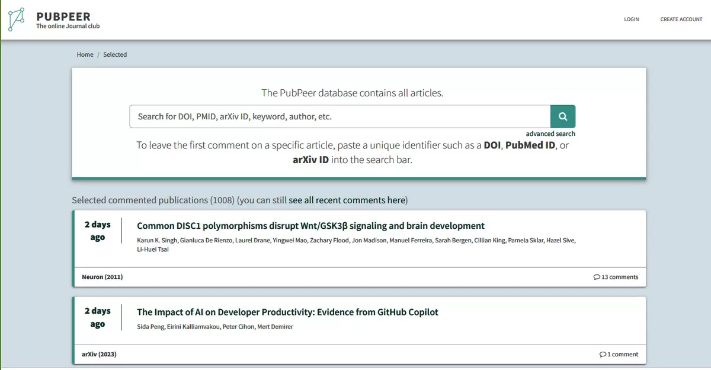
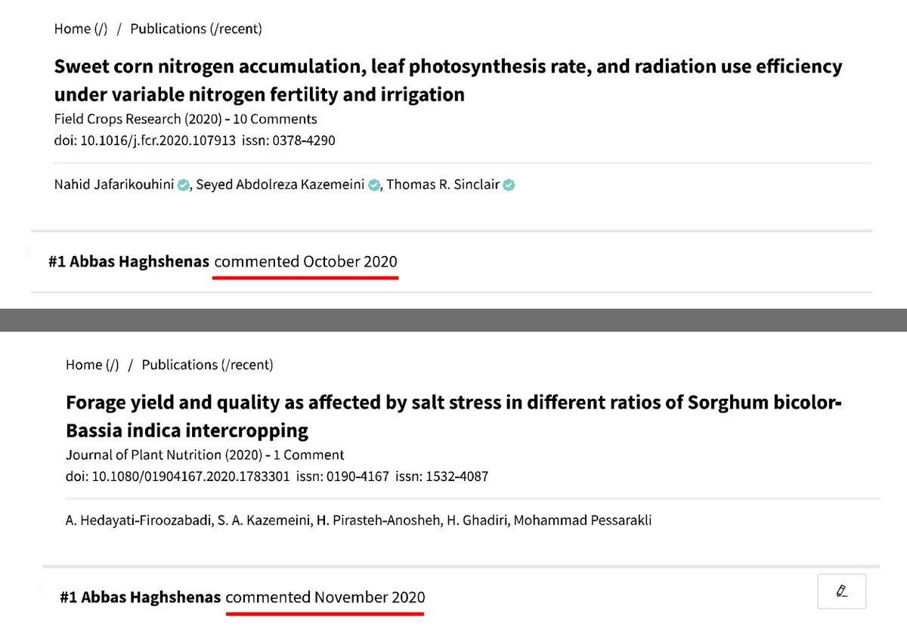

In 2020, while simultaneously corresponding with the Research Ethics Committee of Shiraz University, I also turned to another mechanism for scientific accountability: PubPeer.
PubPeer is one of the most influential platforms for post-publication review in contemporary science.
Its premise is remarkably simple.
Anyone—whether a researcher, reader, reviewer, student, whistleblower, or independent investigator—can publicly comment on a published scientific paper and present evidence regarding possible errors, inconsistencies, or misconduct.
Authors can respond.
Editors can observe.
Publishers can investigate.
And the discussion remains visible to everyone.
In effect, it creates a permanent public forum for scientific scrutiny.

Because of this transparency, PubPeer has played an important role in the correction of the scientific literature worldwide.
Many papers that were later corrected or retracted first attracted attention through discussions on the platform.
I used PubPeer to raise concerns regarding the papers discussed in Lesson One and informed the relevant journals and publishers of the evidence.
In the case of the paper associated with the “Lost Farm” episode, the publisher, Taylor & Francis, acknowledged the concerns and indicated that an investigation would take place.
However, despite subsequent follow-up, no substantive response was ever provided.
For a publisher, silence is not a satisfactory conclusion to a scientific dispute.
In the second case—the papers involving duplicated images and questionable methodological claims—the journal and publisher likewise initiated inquiries.
At that stage, it appeared that the evidence might finally receive independent scrutiny.
Instead, another development inside Iran altered the course of the investigation.
The consequences of that development extended far beyond a single paper.
They illustrate how scientific correction can be affected not only by evidence, but also by the actions of institutions and individuals who choose to intervene.
That story belongs to the next chapter.
